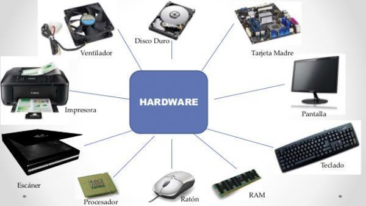
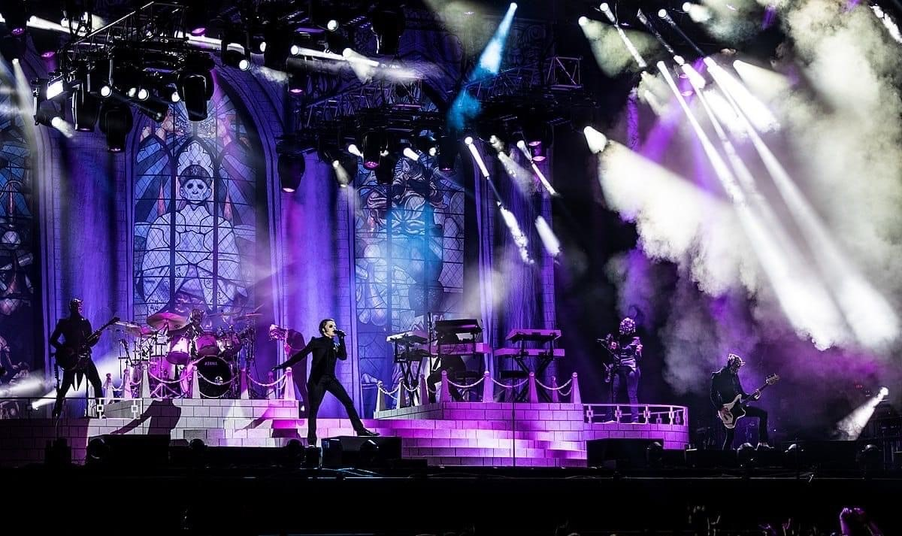

Me gusta jugar videojuegos, disfruto escuchar mi música favorita, en este momento estudio y trabajo.
En este momento estoy estudiando Master en coding en Dev.F, al igual que Ingenieria en Tecnologias computacionales
Me llama la atencion todo esto de la programacion y el desarrollo, aparte que es una buena fuente de ingresos
De todo, pero me inclino mas por el Metal, aunque no sea tan metal la banda Ghost (dicen que es metal pop)
Amo las enfrijoladas, y también el caldo de pollo
tamben enumerare mis bandas que más escucho
Por el momento es todo, luego hacemos otro ejercicio para contar el resto. Saludos.